DigitalKin SDK v1.0.0¤
Target Architecture — From Library to Platform¤
17 new files · 948 tests · 4 proto RPCs · 9 Redis key patterns
What changed — and why¤
The SDK was a library: pip install, subclass BaseModule, run.
Now it's a platform: Gateway + Redis + Resilience.
Why: process crash = total state loss. No reconnection. No signal forwarding. No M2M brokering. No capacity management.
Architecture overview¤
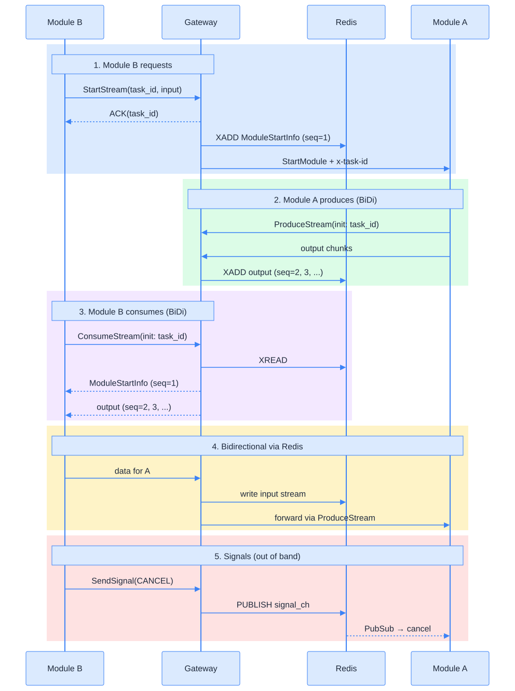
The four Gateway RPCs¤
| RPC | Type | Direction | Purpose |
|---|---|---|---|
StartStream |
unary | B → GW | Request execution. ACK + task_id. GW injects ModuleStartInfo. |
ProduceStream |
BiDi | A → GW | Module A output → Redis. GW forwards B's data → A. |
ConsumeStream |
BiDi | B → GW | Module B reads from Redis. B sends data → Redis → A. |
SendSignal |
unary | B → GW | Cancel/pause via Redis pub/sub (out of band). |
Key: modules are isolated — they only talk to Gateway + Redis. Gateway injects ModuleStartInfo as seq=1.
M2M communication — the core loop¤
Handshake (happens once per task):
- Module B →
StartStream(task_id)→ Gateway starts A → ACK - Module A →
ProduceStream(BiDi)→ Gateway → first msg = ModuleStartInfo → Redis (seq=1) - Module B →
ConsumeStream(BiDi)→ Gateway → reads Redis → gets ModuleStartInfo
Main loop (99% of the time — repeats until done):
- Module B sends data (prompt, context, instructions) → Gateway → Redis → Module A
- Module A processes and responds with output → Gateway → Redis → Module B
- Repeat 4-5 — B asks, A answers. This is the conversation.
Termination: Module A sends completion status, or Module B sends SendSignal(CANCEL).
Modules are fully isolated. They only see Gateway + Redis. Never each other.
The main loop in detail¤
Module B Gateway Redis Module A
│ │ │ │
┌─────────┤ │ │ │
│ REPEAT │ │ │ │
│ ├── data/prompt ──────►│ │ │
│ │ ├── XADD input ────►│ │
│ │ │ │──── read input ─────►│
│ │ │ │ │
│ │ │ │ (A processes) │
│ │ │ │ │
│ │ │ │◄── output chunk ─────┤
│ │ │◄── XADD output ───│ │
│ │◄── StreamOutput ─────┤ │ │
└─────────┤ │ │ │
│ │ │ │
This is 99% of traffic. B asks, A answers. Everything else is handshake or cleanup.
Request flow — full sequence¤
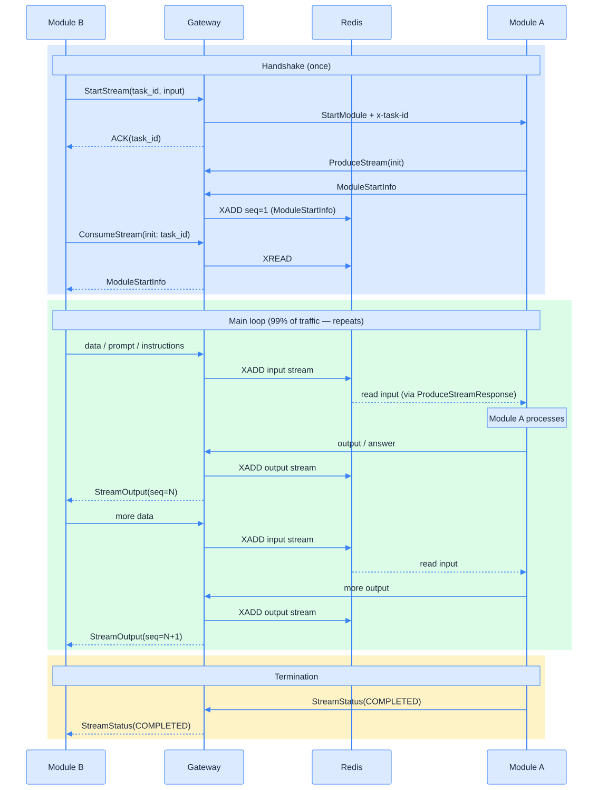
Signal path — batched, no new channels¤
Batching: 50 signals OR 100ms (±10% jitter) → 1 pipeline Dedup: identical JSON payloads skipped Priority: stop/cancel evict oldest on QueueFull
Redis key patterns¤
Reconnection via from_seq¤
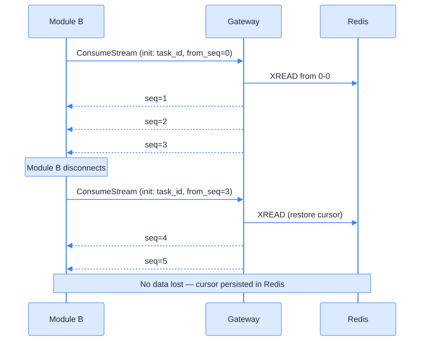
Circuit breaker — fail fast¤
Where: exec_grpc_query()
Every outbound gRPC call.
Cleanup: remove() on channel close. clear_all() on shutdown.
Backoff: 10ms base, 2 retries → 30ms worst case.
Resilience stack¤
| Component | What | Trigger | Recovery |
|---|---|---|---|
| CircuitBreaker | Per-service fail-fast | 5 consecutive failures | 30s → probe |
| WatchdogThread | Loop stall detection | 5s no progress | SIGTERM → SIGKILL |
| Bulkhead | Concurrency limit | Semaphore full (50) | BulkheadFullError |
| SessionReaper | Zombie cleanup | 300s idle | Force cleanup |
| GracefulShutdown | Sequenced exit | SIGTERM | Checkpoint → cancel |
| StartupRestorer | Recovery | Process start | Scan checkpoints |
Latency — before (SDK v0.3)¤
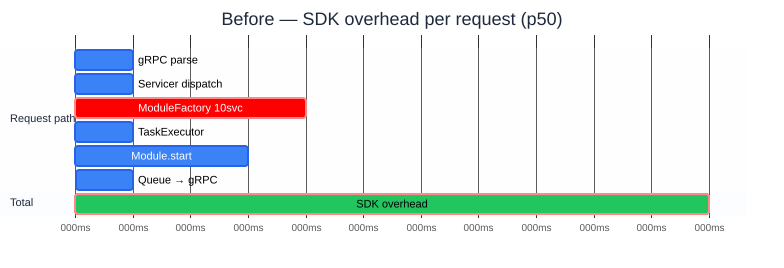
~11ms SDK overhead per request (p50, no tools, idle).
Bottleneck: ModuleFactory initializes 10 service strategies per job (~4ms).
Latency — after (SDK v1.0)¤
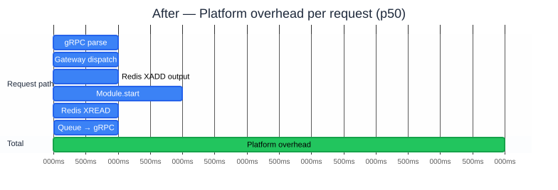
~7ms platform overhead per request (p50, idle). No per-job service init (pool reuse). Redis adds ~2ms but enables reconnection + durability.
What got faster¤
| Stage | Before | After | Why |
|---|---|---|---|
| Utility protocol | 10-60ms | < 5ms | Gateway handles inline, no job creation |
| Signal delivery | ~5ms | ~2ms | RedisSendBuffer batches 50 signals into 1 pipeline |
| gRPC retry | 150ms | 30ms | Backoff base 50→10ms, circuit breaker covers cascade |
| Consumer polling | 1000ms | 250ms | Queue timeout reduced, faster shutdown detection |
What got slower — and why it's worth it¤
| New cost | How much | Why it exists | Mitigation |
|---|---|---|---|
| +1ms per state transition | 6 transitions × ~1ms = ~6ms per task lifecycle | Every session.status = "running" writes to Redis before memory (P1 invariant). If process crashes after Redis write, state is recoverable. |
HSET + EXPIRE pipelined in 1 round-trip (was 2). Fire-and-forget via tracked asyncio.Task. |
| +1ms per output chunk | ~1ms per XADD | Module A's output persisted to Redis Stream for durability + reconnection. Without this, process crash = lost tokens. | RedisStreamBatchWriter flushes 20 items in 1 pipeline (50ms window). |
| +1ms per XREAD | ~1ms per batch read | Module B reads from Redis Stream (not in-memory queue). Enables from_seq reconnection — client disconnects, reconnects, no data lost. |
Batched: 50 entries per XREAD call. Cursor persisted for recovery. |
| +0.5ms per heartbeat | every 500ms idle | Gateway sends heartbeat to Module B during idle periods to detect stale connections. | Was 2000ms — reduced to 500ms for faster detection. |
Memory guardrails¤
Cleanup chain¤
Tradeoffs — what we gained¤
| What | Value |
|---|---|
| Crash recovery | Redis checkpoints survive process restart |
| Reconnection | from_seq on ConsumeStream — no data loss |
| Fail fast | Circuit breaker — no 30s timeout on dead services |
| Module isolation | A ↔ Redis ↔ Gateway ↔ Redis ↔ B — never direct |
| Signal forwarding | Client cancel reaches module in ~1ms via pub/sub |
| Capacity management | 2200 stream cap, zombie reaper, bulkhead |
| Event loop protection | WatchdogThread kills stalled process in 5s |
| Idempotency | Lua atomic claims prevent duplicate execution |
Tradeoffs — what we lost¤
| What | Cost | Why worth it | Mitigation |
|---|---|---|---|
| Redis SPOF | Full degradation if Redis down | Durability, reconnection, isolation | Fallback to in-memory if redis_client=None |
| +6ms per lifecycle | 6 status writes × ~1ms each | Crash recovery — state survives restart | Pipelined HSET+EXPIRE (1 RTT, not 2) |
| +1ms per chunk | XADD per output | Reconnection via from_seq |
BatchWriter: 20 items per pipeline |
| +1ms per read | XREAD per batch | Durable delivery to Module B | 50 entries per XREAD call |
| Gateway hop | +0.5ms per message | Full module isolation + signals | Required — modules never see each other |
| Bounded queues | Items dropped when full | Prevents OOM under load | Configurable: BLOCK/DROP_OLDEST/REJECT |
Design decisions¤
| Decision | Why | Rejected |
|---|---|---|
| ProduceStream (A) + ConsumeStream (B) | Separate BiDi per role — clean isolation | Single BiDi mixes directions |
| Gateway injects ModuleStartInfo | Decouples A from start info format | A producing it couples protocol |
| RedisStreamBatchWriter | 20 items or 50ms per pipeline flush | Per-item XADD wastes RTTs |
| Session state in Redis | Enables Gateway horizontal scaling | In-memory = single instance |
task_id from client |
Universal key: Redis, signals, metrics | Server-minted splits references |
Redis in core/ |
Infrastructure, not strategy | RedisTaskManager was wrong |
| 10ms retry base | CB already covers cascade | 150ms too slow with CB |
| Jitter on flush | Prevents thundering herd | Fixed interval synchronizes |
Test coverage¤
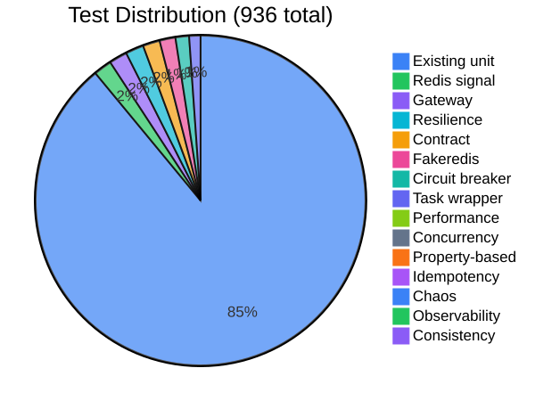
936 total - 134 new tests - 10 test categories - 14 pytest markers
Test markers¤
uv run pytest -m property # Hypothesis
uv run pytest -m concurrency # Race conditions
uv run pytest -m chaos # Fault injection
uv run pytest -m idempotency # Duplicate handling
uv run pytest -m contract # Proto shapes
uv run pytest -m stress # Latency budgets
uv run pytest tests/core/redis/ # Fakeredis
uv run pytest tests/gateway/ # Gateway
uv run pytest tests/advanced/ # All advanced
File structure¤
src/digitalkin/
├── core/
│ ├── task_manager/redis/ Infrastructure
│ │ ├── redis_client.py Ref-counted pool
│ │ ├── redis_signal.py Listener + SendBuffer
│ │ ├── redis_state.py Lifecycle state
│ │ ├── redis_streams.py XADD + XREAD + cursor
│ │ ├── redis_checkpoint.py Checkpoint + index
│ │ └── redis_idempotency.py Lua atomic claims
│ ├── task_manager/task_wrapper.py TRACE_CTX
│ └── resilience/
│ ├── watchdog.py Loop stall → SIGKILL
│ ├── bulkhead.py Per-service semaphore
│ ├── session_reaper.py Zombie cleanup
│ └── graceful_shutdown.py SIGTERM + restore
├── grpc_servers/
│ ├── gateway_servicer.py 4 RPCs (StartStream, ConsumeStream, ProduceStream, SendSignal)
│ ├── stream_session.py Per-task session state
│ ├── stream_registry.py Redis-backed capacity + reaper
│ ├── gateway_constants.py All constants and Redis key helpers
│ ├── interceptors/ Circuit breaker interceptor
│ └── utils/circuit_breaker.py State machine
What's NOT done¤
| Component | Status |
|---|---|
| structlog | ⭕ ContextVar-injected structured logging |
| OpenTelemetry | ⭕ Spans at module boundaries |
| Prometheus | ⭕ Counters/histograms |
| LatencyBudget | ⭕ Per-stage timing at session close |
Only remaining gap between prototype and target architecture.
Running it¤
# ModuleServer (unchanged)
python examples/start_grpc_server_module.py
# Gateway (new)
DIGITALKIN_REDIS_URL=redis://localhost:6379/0 \
GATEWAY_REGISTRY_HOST=localhost \
GATEWAY_REGISTRY_PORT=50052 \
python examples/start_grpc_server_gateway.py
# Redis (Docker)
docker compose --profile redis up -d
# Tests
uv run pytest --timeout=60 -q -k "not integration"